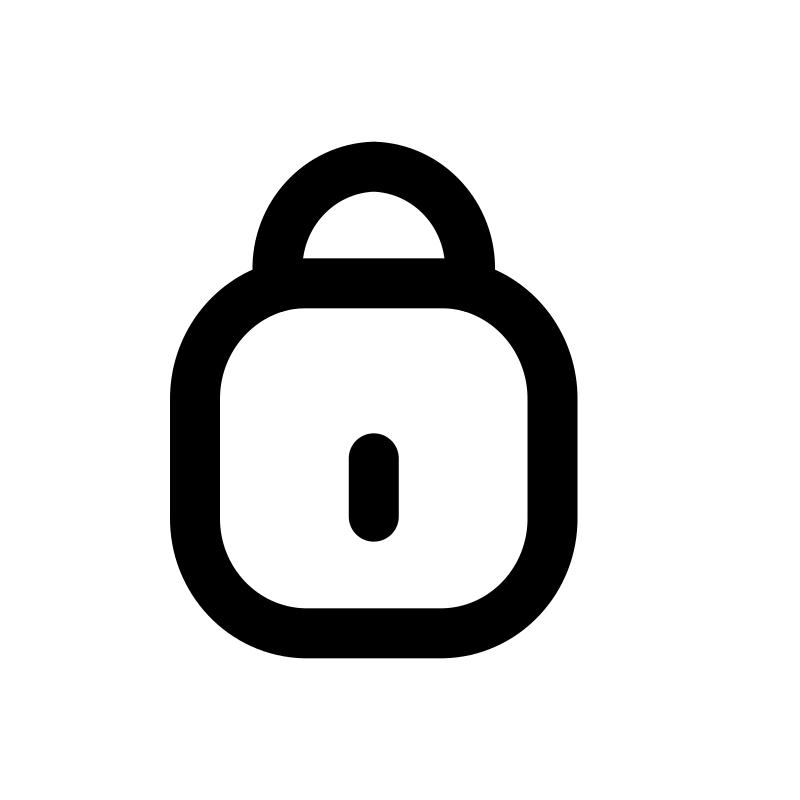
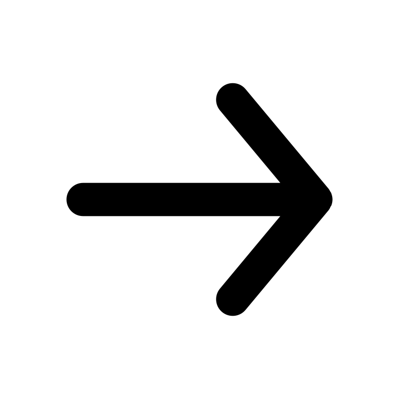

Designing experiences. Creating everything else.
Experience
Iterated across 30+ screens, refining features and design system components based on user research insights. Distilled findings from 30+ sessions to map critical friction points and architect end-to-end UX flows.
Launched and scaled an art-focused SaaS to 300+ subscribers through organic, user-driven growth. Refined subscription content strategy using insights from 20+ user interviews and 3 usability studies, resulting in a 25% reduction in churn. Deployed A/B user flows and IA leveraging GA4 insights to improve completion rates and accessibility.
Spearheaded a mobile-first design initiative, delivering a responsive prototype within 1 month and launching on the App Store within 2 months. Closed the design-to-dev gap by embedding in sprint reviews and QA cycles, achieving pixel-accurate Figma-to-TestFlight handoff across all screen breakpoints with fewer than 5 revision rounds.
Redesigned program discovery flow for families navigating medical hardship, cutting average time-to-access from 5 steps to 2 within the first month of rollout. Drove 50% growth in cross-platform following by overhauling content strategy and aligning UX with brand voice across web and social. Partnered with program directors and key stakeholders to ship a unified design language used across cross-functional teams and donor-facing materials.
Grew Grumnaile to 2,500+ orders fulfilled by optimizing conversion through iterative product page design and purchase analytics. Designed end-to-end storefront UX from product photography to checkout flow, driving consistent organic growth.
Selected Projects


Education
I exist outside of Figma. Get to know me.
About
I'm Samuel, a UX designer focused on better user experiences through intuitive layout and storytelling. I've always been interested in the psychology of design, and love coordinating both research-backed and creative direction.
I graduated from UT Austin with a BBA in Marketing and Information Systems, then pursued my passion project Brushies while teaching myself UX through courses and a few good books. Now I work to polish my craft daily — whether that's through research, design systems, or code.
When I'm not working, you can find me doodling, listening to Madonna's '90s hits, or walking my two pups, Tink and Tilly.